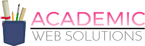
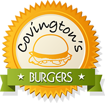
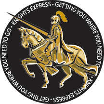
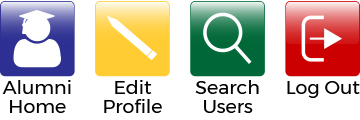
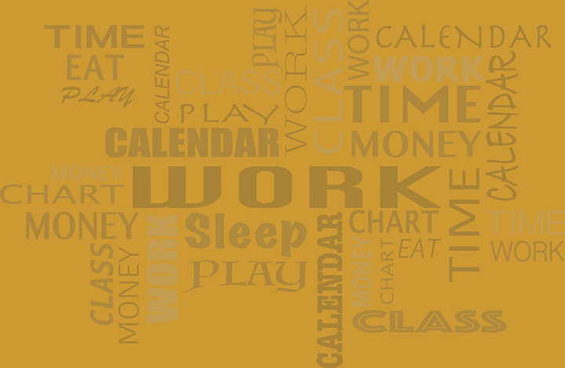
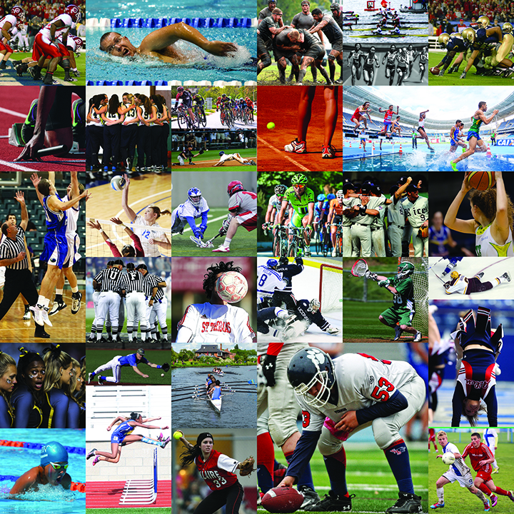

Hi! I'm Shari Smith, a Web Developer and Graphic Designer living and working in Orlando, Fl.
I am passionate about creating responsive, clean and unique designs. I specialize in interactive, effective, user-centered web applications.
Please peruse my work, read the juicy bits, and discover why I would be a great addition to your development team.
Thanks!
Shari
This site is intended to be marketed to Colleges/Universities as a way for their Alumni to connect and network. The site provides the user the ability to enter/update their profile information, which includes their name, work history and education. Other users can then search based on this information. The site also includes a blog that is searchable by category.
Future updates for the site would include creating a Calendar of Events and a Store front (for gear targeted for that specific school).
My contributions to the site included:
• Creation of the Landing and Registration pages
• Creation of the logos/buttons
• Some styling work on the Profile/Blog and Search Pages
In addition to my web design skills, I also can create logos either based on a customer's design sketch or from scratch.
Here are some samples of logos I have created:
Academic Web Solutions Logo...recreated in Illustrator based off of a mockup created by another artist.

Covington's Burgers...created in illustrator using several pieces of clip art combined to create the final piece.

Knights Express...created in illustrator using a piece of clip art that I adjusted the colors to match the look I was going for.

I am a Central Florida native. I grew up on the Space Coast and moved to the Orlando area when I began attending the University of Central Florida….GO KNIGHTS!!!
I graduated from UCF with a BA in Art (Graphic Design). Upon graduation, I obtained a job as a Pasteup Artist and so began my career with the Orlando Sentinel. Over the course of almost 23 years, I held multiple positions, including Ad Builder, Prepress Trainer, and Regional Manager.
Unfortunately, due to the decline of revenue in the newspaper industry I was laid off this past August. But please don’t feel bad for me. This was realy a blessing in disguise. I loved what I did at the Sentinel and I am grateful for all of the opportunities I had there. But, this life changing event gave me the push I needed to pursue something I had always wanted to learn...web design.
In September, I enrolled in the UCF Coding Boodcamp. It has been tough, those that know coding know what I’m talking about (yes, I’ve shed a few tears and pulled out more than a few hairs), but I made it through the course! Now I’m ready to begin my coding career!
I don’t know what the future will hold, but as one of my friends told me, this is my time to ROAR!
This site was developed to help users better manage their time. The site provides them the ability to populate their calendar with dragable event categories. The user can then adjust the time frame of the event as needed. Users can also create ‘To-Do,s’.
Future updates will include adding a ‘Quote of the Day’, a graph showing how much time is spent during a given time frame on each ‘event’ type and event reminders.
My contributions to the site included:
• Development of the Landing and Login/Signup pages
• Creation of the artwork for the Landing and Login/Signup pages
• Photoshop work on the carosuel images on the Landing page
So, you are probably are sitting there wondering what a mouse has to do with buttons. Honestly, I'm not sure myself. I found the pic above on one of my favorite art sites when doing a search for 'buttons'. I'm assuming it was his name? At any rate, I thought he was cute and it got you to look at this section! LOL
Here are some samples of buttons I have created:

In 2006, I was introduced to the love of my life, my dog Covington. He is the best dog anyone could ever ask for, yes I’m prejiduce, but he really is incredible. He keeps me on my toes and is a wonderful companion. So, as you get to know me, be prepared….you will be seeing lots of pictures! ;)
One of my favorite things to do is bake. I find it very relaxing and I love how my creations make others happy. Over the years I have made a range of goodies, from cupcakes that look like a plate of spaghetti, to cookies that looked like hamburgers. Just ask and I’ll be happy to whip something up to delight your tastebuds.
I have recently joined several Orlando area coding groups, including Orlando Devs, OrlandoJS, WordPress Orlando, Orlando Christian Technologists & Entrepreneurs and Front End Orlando just to name a few. So, please look for me at the meetings.
After viewing several pet rescue sites, we recognized a real need for a rescue site that provided a better user experience in searching for their next ‘fur-ever’ friend. Most sites were not user friendly and lacked style. We realize most of the rescues are operating on a tight budget, so our thought was this could potentially be a future community service project.
Future updates will include the ability to see the location of the selected pet. The ability to receive notifications when a pet that matches your search criteria becomes available.
My contributions to the site included:
• Writing the javascript code to do the Pet Finder API pull.
The background shown above is an example of my Illustrator skills. I took parts of the logo for the Plan-Tastic web site and used them to create a pattern background that was used in the footer of the site.
This background was also used on the Plan-Tastic web site. It started with a Word Clound Illustrator I found on the web. I changed out all of the text to our Calendar Category titles and then took the image into Photoshop to adjust the opacity to give it an overlay effect.

This background is one of several I created for the Alumni Web Portal site. I had never really done much with layer masks up to this point, so this project really helped me improve my Photoshop skills. For the site, the opacity was adjusted to make it more subtle.
